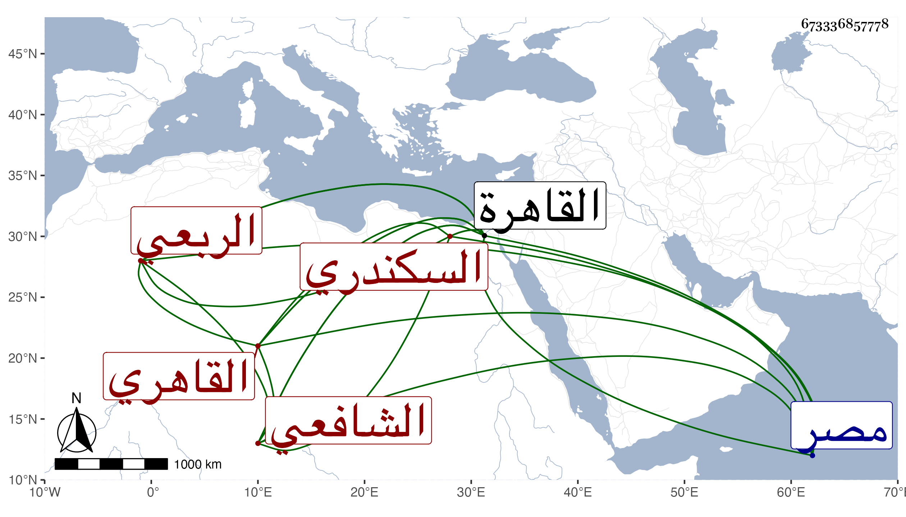

0902Sakhawi.DawLamic.ITO20230111-ara1.EIS1600.673336857778
Biography ID: 673336857778
294
محمد بن محمد بن عبد اللطيف بن أحمد بن محمود بن أبي الفتح الشرف أبو الطاهر بن العز أبي اليمن الربعي التكريتي ثم السكندري القاهري الشافعي ويعرف كسلفه بابن الكويك . ولد في ذي القعدة سنة سبع وثلاثين وسبعمائة بالقاهرة ، وأجاز له في سنة مولده المزي والذهبي والبرزالي وزينب ابنة الكمال وعلي بن العز عمر وعلي بن عبد المؤمن بن عبد وإبراهيم بن القريشة وأبو عمر ابن المرابط وخلق وأحضر علي إبراهيم بن علي القطبي وأسمع علي أبي نعيم الأسعردي والميدومي وأبي الفرج بن عبد الهادي ويوسف بن جبريل الموقع والقاضي عز الدين بن جماعة وأبي الحرم القلانسي وكذا أحمد بن كشتغدى على ما يحرر ، وعمر حتى تفرد بالرواية عن أكثر شيوخه ، وخرج له شيخنا مشيخة بالإجازة وعوالي بالسماع والإجازة وأكثر الناس عنه وتنافسوا في الأخذ عنه وحبب إليه السماع لانقطاعه في منزله وقرأ عليه شيخنا جملة وكذا أكثر عنه الزين رضوان وفيمن روى عنه الآن أعني سنة ست وتسعين جماعة كحفيد شيخنا الشهاب العقبي وابن الشهاب البوصيري . ذكره شيخنا في معجمه وقال أنه نشأ في عز وسعادة ولازم العز بن جماعة وباشر له عدة جهات في الأوقاف وغيرها مع النزاهة والتعفف ومما حضره على الميدومي في الرابعة المسلسل وكذا من مسموعاته على أبي الفرج بن عبد الهادي وأبي الحرم القلانسي صحيح مسلم وعلى ناصر الدين محمد بن محمد بن أبي القسم التونسي وعبد العزيز بن عبد القادر بن أبي الدر الربعي وأحمد ابن الحافظ الشرف الدمياطي ملفقا السنن لأبي داود وعلى أبي الفتوح يوسف بن محمد الدلاصي الشفا وعلى إبراهيم ومحمد وفاطمة بني الفيومي مشيخة الرازي وعليهم وإبراهيم القطبي والبدر الفارقي سداسيات الرازي وعلى العز بن جماعة حضورا جزء ابن الطلاية وعلى أبي نعيم الأسعردي والقطبي جزء ابن عرفة وجزء البطاقة إلى غيرها ، وممن سمع عليه الشفا المقريزي وذكره في عقوده وقال أنه نشأ في عز وسعادة وهو من أخص جيراننا وأعز معارفنا وأصحابنا . مات في خامس عشرى ذي القعدة سنة إحدى وعشرين ونزل أهل مصر والقاهرة بموته درجة ولم يبق بهما بعده من يروي عن ما عدا العز بن جماعة من مشايخه لا بالسماع ولا بالإجازة بل ولا في الدنيا من يروي عن أكثر شيوخه وهو ممن أجاز لمدركي حياته رحمه الله وإيانا .
